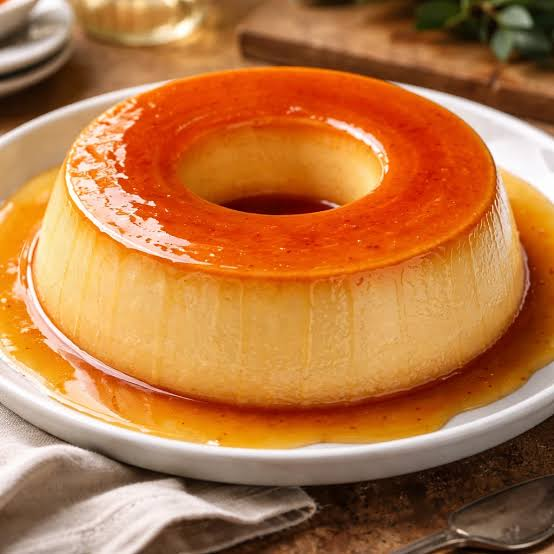

Pudim de Leite Condensado

⏱ Total: 4h30min
Preparo: 15min
Cozimento: 1h15min (+ 3h de geladeira)
🍽 Porções: 10
Dificuldade: Médio
Ingredientes
- 1 lata de leite condensado
- 2 latas de leite (use a lata do leite condensado)
- 3 ovos
- 1 xícara (chá) de açúcar para a calda
Modo de preparo
1
Faça a calda: derreta o açúcar em fogo baixo até dourar e despeje em uma forma de pudim.
2
No liquidificador, bata o leite condensado, o leite e os ovos.
3
Despeje a mistura na forma caramelizada e cubra com papel-alumínio.
4
Asse em banho-maria a 180°C por cerca de 1 hora e 15 minutos.
5
Espere esfriar, leve à geladeira por 3 horas e desenforme.